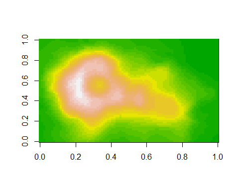

Blosc is a blocking, shuffling and lossless compression algorithm. It is often used to compress n-dimensional structured array data. It is applied (among others) in the geo-spatial zarr file format. This package ports BLOSC compressors and decompressors to R.
Installation
Install latest developmental version from R-Universe:
install.packages("blosc", repos = c('https://pepijn-devries.r-universe.dev', 'https://cloud.r-project.org'))MacOS users may first need to install system requirements before installing the package using:
source("https://mac.R-project.org/bin/install.R")
install.libs("blosc")Example
The blosc package can be used to compress raw data, but also vectors of other data types. The example below shows how data from the volcano matrix can be compressed with blosc.
library(blosc)
volcano_compressed <-
blosc_compress(volcano, typesize = 2L, dtype = "<f2")
object.size(volcano_compressed)
#> 6312 bytes
object.size(volcano)
#> 42672 bytesNote that 16 bit floating (<f2) point numbers are used for the compression which are much less precise than R’s native 64 bit floating point numbers. Nonetheless, in this particular case the precision is sufficient to restore the volcano data.
volcano_reconstructed <-
matrix(
blosc_decompress(volcano_compressed, dtype = "<f2"),
nrow(volcano),
ncol(volcano)
)
image(volcano_reconstructed, col = terrain.colors(24L))
More details
For more details about Blosc compression and decompression please check vignette("blosc-compression"). For more information about data type encoding and decoding please check vignette("dtypes").
Code of Conduct
Please note that the blosc project is released with a Contributor Code of Conduct. By contributing to this project, you agree to abide by its terms.